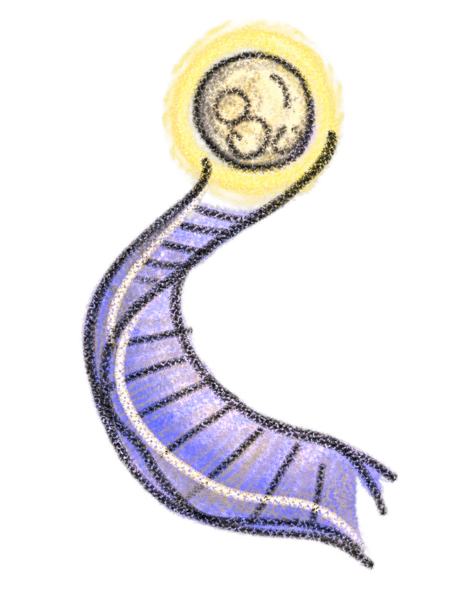
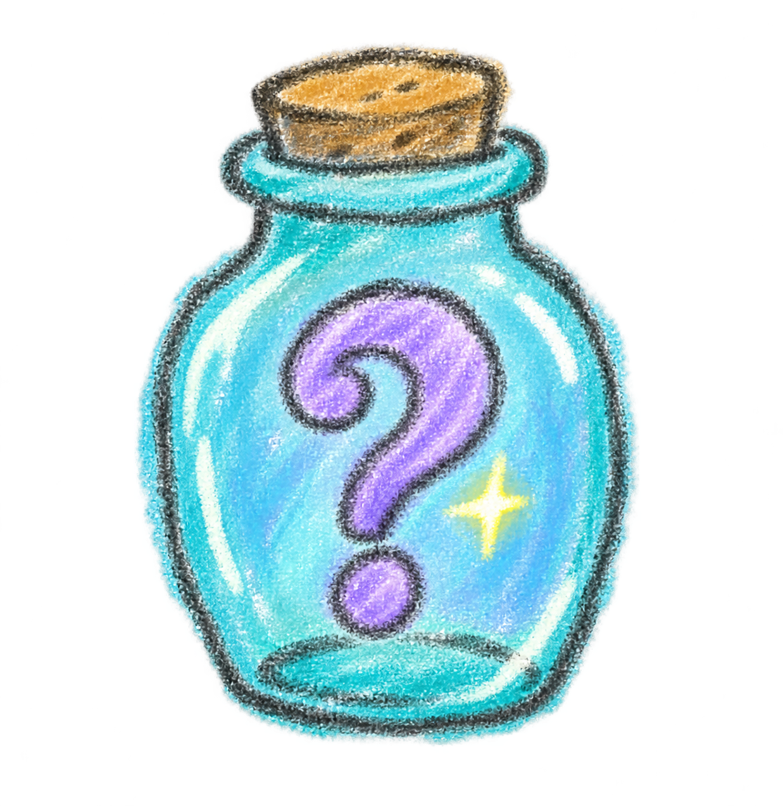
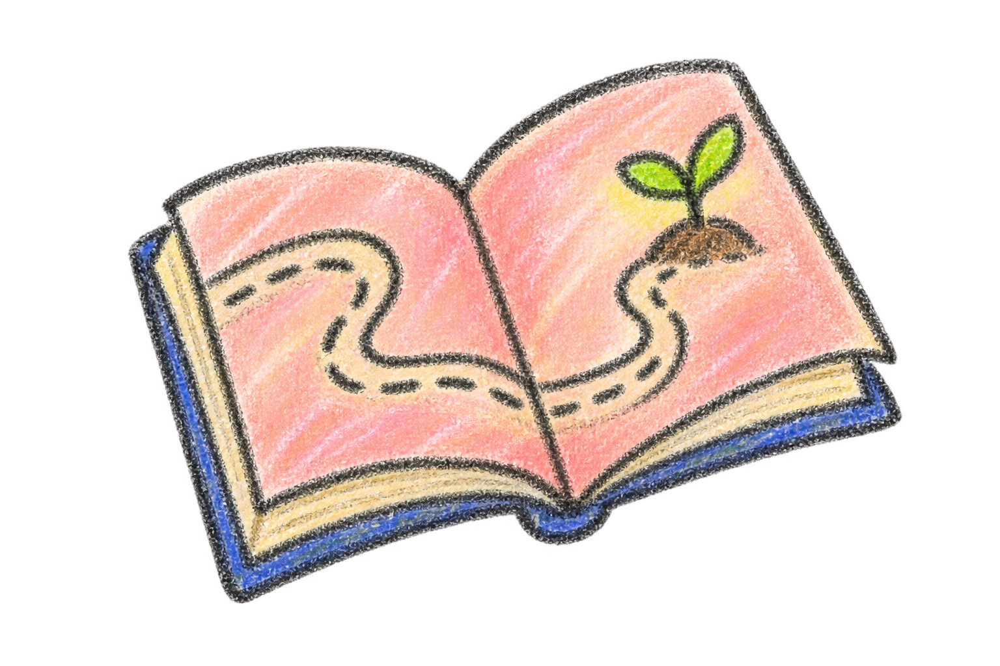
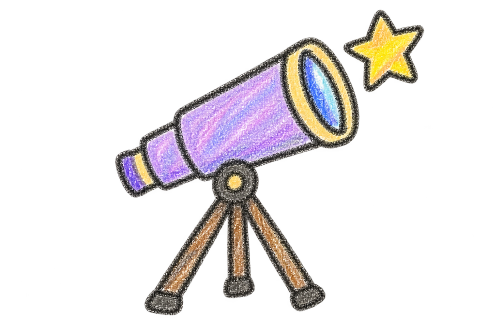
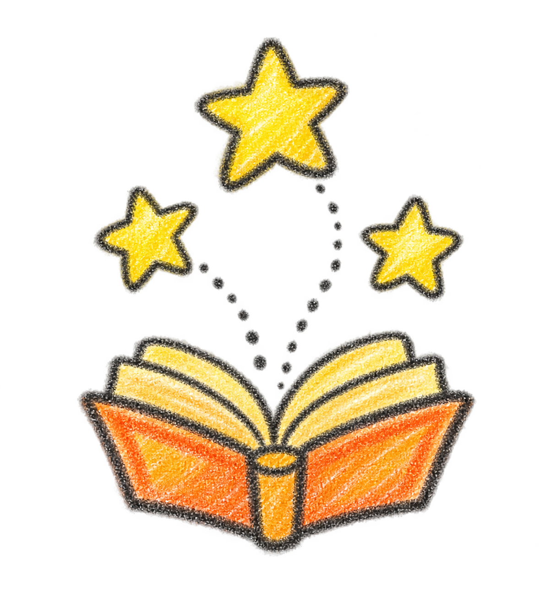
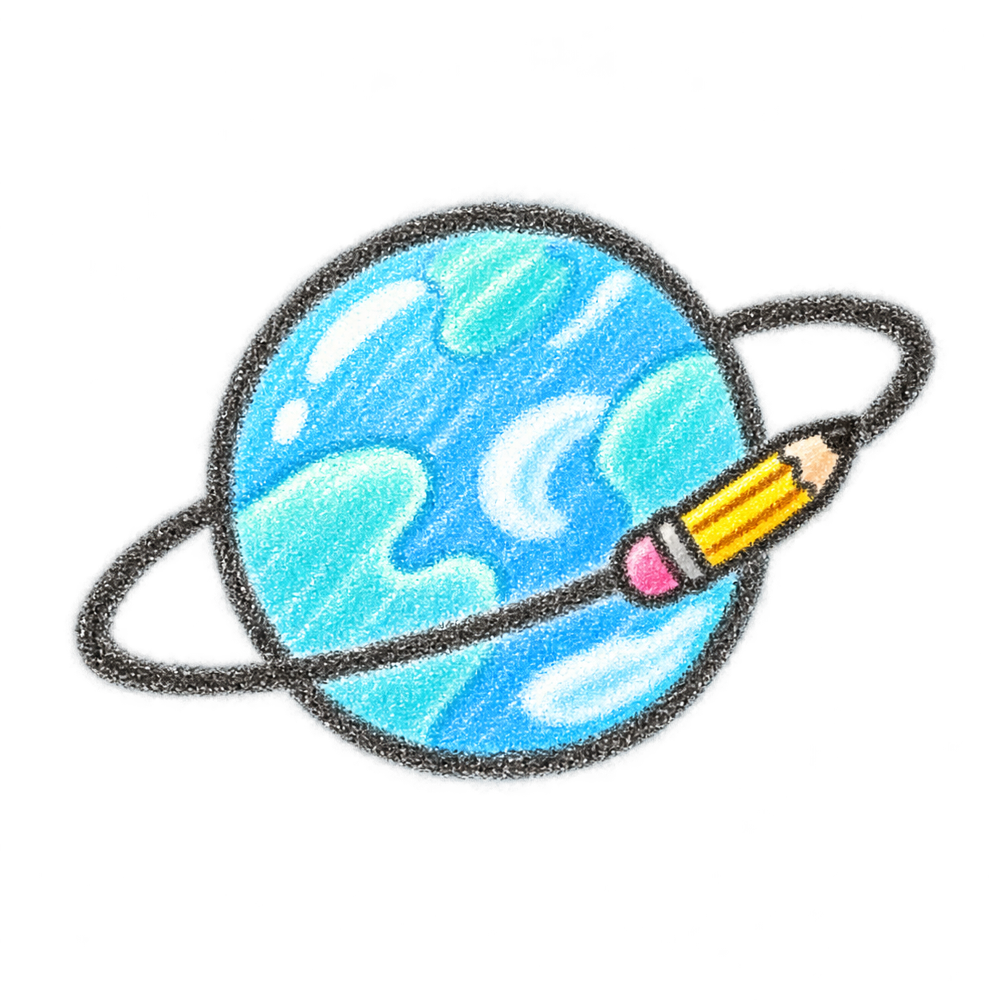

YOU HAVE ENTERED • WONDER LOK
Being human is
strange. Let’s
look closer.
Consider this a part of a field guide, a playground, or a breathe of fresh air, explore yourself and the astonishing world around you!
WONDER IN LIFE
Six worlds.
Every human trait.
Choose the world that feels most useful today.

The Messy Beginnings
कच्ची शुरुआत, An unpolished start is also a start.
ENTER
The Why?
अंदर का क्यूँ? You have started now, what is the inner calling behind it?
ENTER
The Becoming Atlas
बनने का रियाज़, the practice of becoming, practising, doubting, remembering and returning until the unfamiliar thing gradually becomes part of you. Being the most authentic to you.
ENTER
The Furnace of Mistakes
गलतियों की भट्टी, A safe space to write the angry, unpolished version and the Recognition that mistakes do not carry equal consequences .
ENTER
Teachers Constellation
A soft landing for the humans who teach.
ENTER
Student Orbit
The beautifully difficult business of becoming.
ENTERWONDER AT WORK
Your job title is not your whole story.
Explore professions, impossible decisions, workday realities and the quiet human skills no résumé knows how to hold.
- Meet the human behind the profession
- Walk through real decision paths
- Reflect without chasing a perfect answer
WRONG DOOR? IMPOSSIBLE.